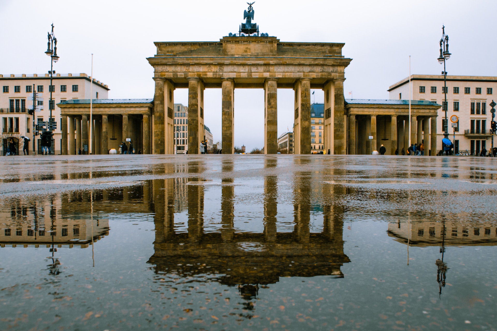
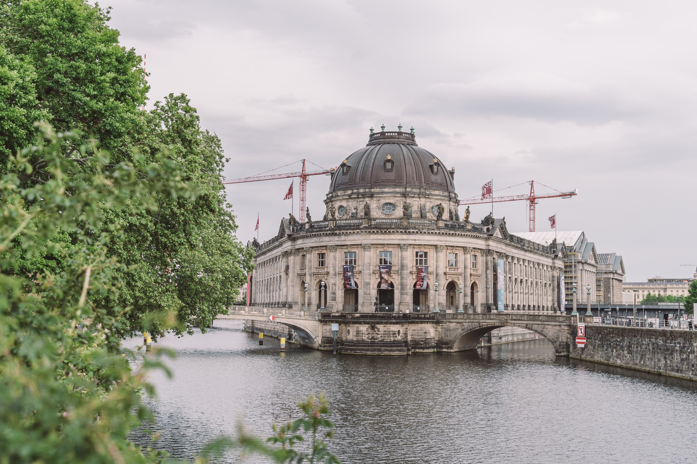
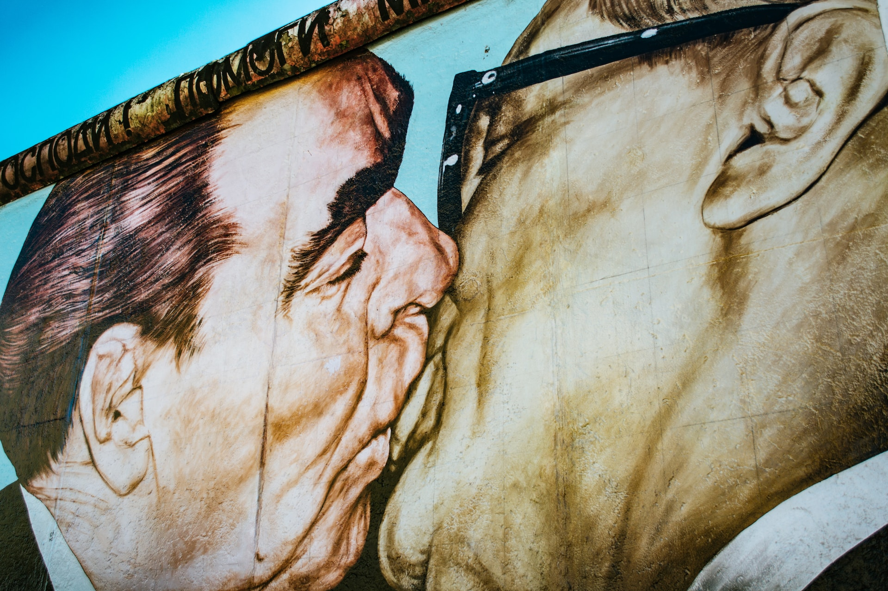
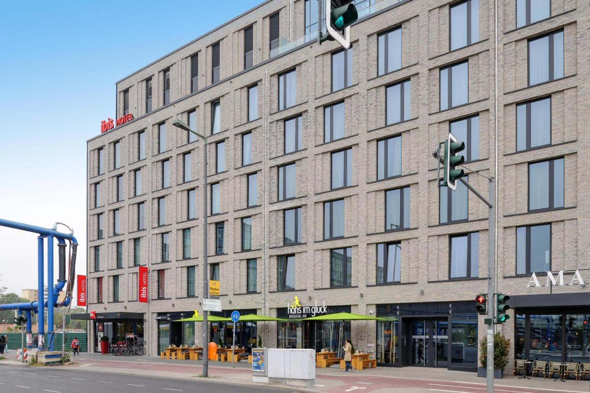
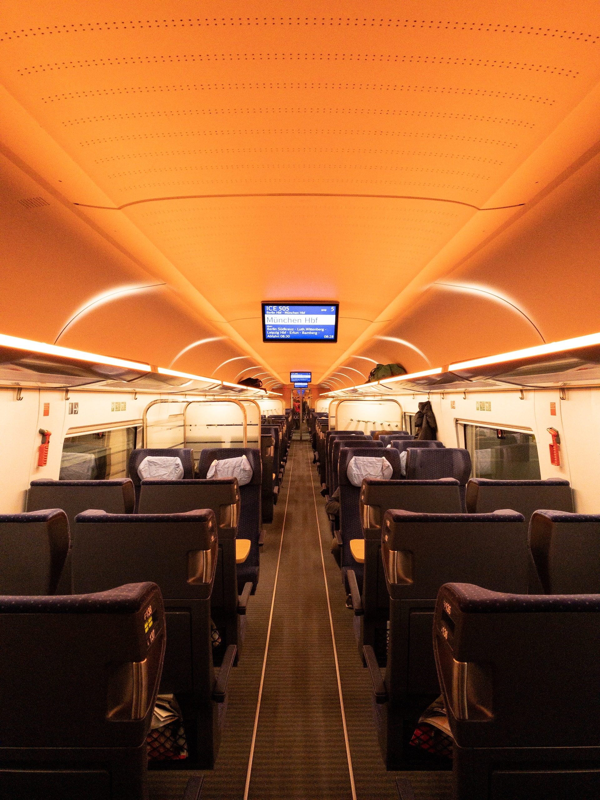
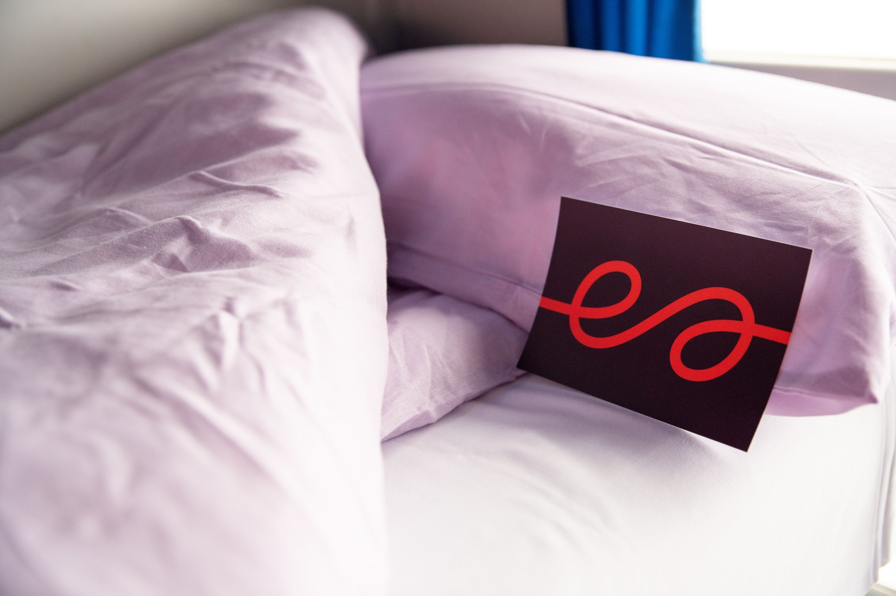

Berlin
Willkommen in Berlin!
Ontdek bruisend Berlijn, de stad waar geschiedenis en moderniteit samenkomen.Wandel door de fascinerende straten en ervaar de energie van deze bruisende hoofdstad.
Bezoek de iconische Brandenburger Tor en voel de historische betekenis.
Verken de overblijfselen van de Berlijnse Muur en reflecteer over de indrukwekkende transformatie van de stad.
Berlijn is ook een cultureel paradijs, ontdek wereldklasse musea, zoals het Pergamonmuseum, waar eeuwenoude kunstschatten te bewonderen zijn.
Geniet van het bruisende nachtleven in de trendy wijken Kreuzberg en Friedrichshain.
Proef heerlijke Duitse gerechten, zoals currywurst, schnitzel en zoveel meer...
Voor shopliefhebbers biedt Berlijn eindeloze mogelijkheden, van chique boetieks tot vintage winkels en levendige markten.
Kortom, Berlijn is een stad die je moet ervaren.
Voel de vibe, dompel je onder in de geschiedenis en geniet van de moderne cultuur.
Welkom in Berlijn, waar elke hoek een nieuw avontuur biedt.
De must-sees van Berlin
Brandenburger Tor
Als iconisch symbool van Berlijn is de Brandenburger Tor een absolute must-see.
Bewonder de majestueuze neoklassieke poort, een overblijfsel uit de 18e eeuw, en leer over zijn historische betekenis als symbool van een verdeelde stad en de hereniging van Duitsland.
Als iconisch symbool van Berlijn is de Brandenburger Tor een absolute must-see.
Bewonder de majestueuze neoklassieke poort, een overblijfsel uit de 18e eeuw, en leer over zijn historische betekenis als symbool van een verdeelde stad en de hereniging van Duitsland.


Museumsinsel
Bezoek het Museumsinsel, UNESCO-werelderfgoed met vijf wereldberoemde musea.
Ontdek de schatten van het Pergamonmuseum, geniet van klassieke kunst in de Alte Nationalgalerie en bewonder het indrukwekkende Nefertiti-beeld in het Neues Museum.
Kortom, een paradijs voor kunst- en geschiedenisliefhebbers.
Bezoek het Museumsinsel, UNESCO-werelderfgoed met vijf wereldberoemde musea.
Ontdek de schatten van het Pergamonmuseum, geniet van klassieke kunst in de Alte Nationalgalerie en bewonder het indrukwekkende Nefertiti-beeld in het Neues Museum.
Kortom, een paradijs voor kunst- en geschiedenisliefhebbers.
East Side Gallery
Bezoek de langste overgebleven sectie van de Berlijnse Muur, nu bekend als de East Side Gallery.
Bewonder de kleurrijke muurschilderingen die een krachtig eerbetoon zijn aan vrijheid en eenheid.
Een inspirerende plek waar kunst en geschiedenis samenkomen.
Bezoek de langste overgebleven sectie van de Berlijnse Muur, nu bekend als de East Side Gallery.
Bewonder de kleurrijke muurschilderingen die een krachtig eerbetoon zijn aan vrijheid en eenheid.
Een inspirerende plek waar kunst en geschiedenis samenkomen.

Accommodatie
Tijdens je verblijf logeer je in het IBIS Hotel Berlin Hauptbahnhof.
Het IBIS Hotel Berlin Hauptbahnhof ligt op slechts een paar honderd meter van het centraal station, in de buurt van de regeringsgebouwen, Friedrichstrasse en de levendige, trendy wijk rond Rosenthaler Platz.
Het recent gebouwde hotel heeft 172 kamers met optimale geluidsisolatie, airco en heerlijke Sweet Bed by ibis bedden voor maximaal slaapcomfort.
Het IBIS Hotel Berlin Hauptbahnhof ligt op slechts een paar honderd meter van het centraal station, in de buurt van de regeringsgebouwen, Friedrichstrasse en de levendige, trendy wijk rond Rosenthaler Platz.
Het recent gebouwde hotel heeft 172 kamers met optimale geluidsisolatie, airco en heerlijke Sweet Bed by ibis bedden voor maximaal slaapcomfort.

De treinreis
Om met de trein te reizen richting Berlin kunt u kiezen voor de dagtrein met één overstap in Köln of de rechtstreekse nachttrein.

Dagtrein
Overdag reist u aan boord van de comfortabele ICE-treinen gemakkelijk en snel in de richting van Berlin.
Onderweg hebt u één overstap in Köln.
Voor de heenreis hebt u de volgende reisopties:
Voor de terugreis hebt u volgende reisopties:
Overdag reist u aan boord van de comfortabele ICE-treinen gemakkelijk en snel in de richting van Berlin.
Onderweg hebt u één overstap in Köln.
Voor de heenreis hebt u de volgende reisopties:
- Vertrek in Brussel-Zuid om 06:23, aankomst in Berlin om 13:15.
- Vertrek in Brussel-Zuid om 08:23, aankomst in Berlin om 16:13.
- Vertrek in Brussel-Zuid om 10:25, aankomst in Berlin om 18:15.
- Vertrek in Brussel-Zuid om 12:25, aankomst in Berlin om 19:57.
- Vertrek in Brussel-Zuid om 14:25, aankomst in Berlin om 21:57.
- Vertrek in Brussel-Zuid om 16:22, aankomst in Berlin om 00:14.
Voor de terugreis hebt u volgende reisopties:
- Vertrek in Berlin om 06:00, aankomst in Brussel-Zuid om 13:35.
- Vertrek in Berlin om 07:59, aankomst in Brussel-Zuid om 15:35.
- Vertrek in Berlin om 09:46, aankomst in Brussel-Zuid om 17:35.
- Vertrek in Berlin om 11:46, aankomst in Brussel-Zuid om 19:35.
- Vertrek in Berlin om 13:46, aankomst in Brussel-Zuid om 21:35.
Nachttrein
's Nachts reist u rechtstreeks tussen Brussel en Berlin met de nachttrein van European Sleeper.
Onderweg dus geen zorgen om een overstap, leg je 's avonds neer, geniet van je nachtrust en ontwaak in de Duitse hoofdstad.
De heenreis is mogelijk op maandag, woensdag en vrijdag:
De terugreis is mogelijk op dinsdag, donderdag en zondag:
's Nachts reist u rechtstreeks tussen Brussel en Berlin met de nachttrein van European Sleeper.
Onderweg dus geen zorgen om een overstap, leg je 's avonds neer, geniet van je nachtrust en ontwaak in de Duitse hoofdstad.
De heenreis is mogelijk op maandag, woensdag en vrijdag:
- Vertrek in Brussel-Zuid om 19:22, aankomst in Berlin om 06:48.
De terugreis is mogelijk op dinsdag, donderdag en zondag:
- Vertrek in Berlin om 22:56, aankomst in Brussel om 09:27.

Prijzen
Deze reis is beschikbaar vanaf €350,- per persoon.Inbegrepen in de prijs zijn de heen- en terugreis, 3 overnachtingen ter plaatse inclusief ontbijt en BTW.
Op verzoek kan de reisduur steeds uitgebreid of ingekort worden.
Boek je reis via ons boekingsformulier en wij sturen je zo snel mogelijk een reisvoorstel.